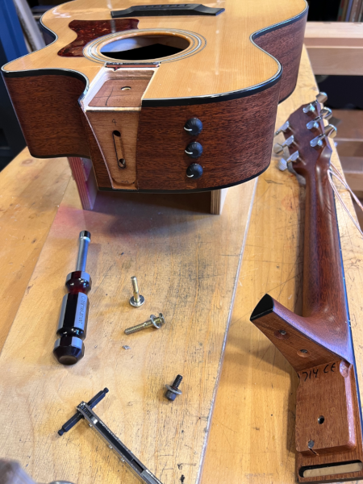
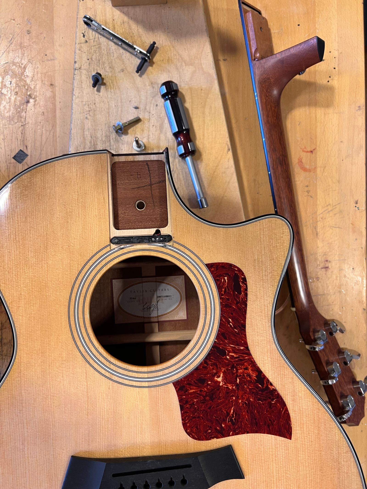

Steinhorst Gitarren ist eine eingetragene Reparaturwerkstatt für Taylor-Guitars: Bei mir können Garantie-Reparaturen
nach den Taylor Garantiebedingungen durchgeführt werden, z.B. ein Neckreset oder eine Bundabrichtung.
Bei Fragen stehe ich Ihnen gerne zur Verfügung.